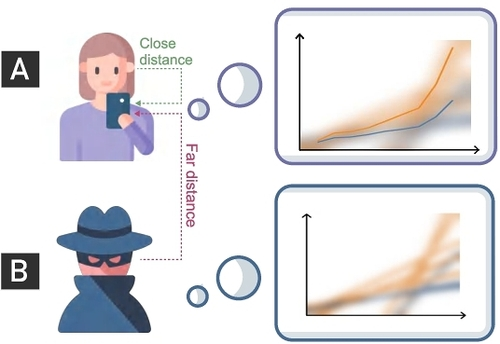
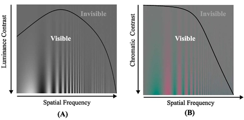
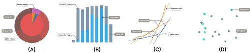
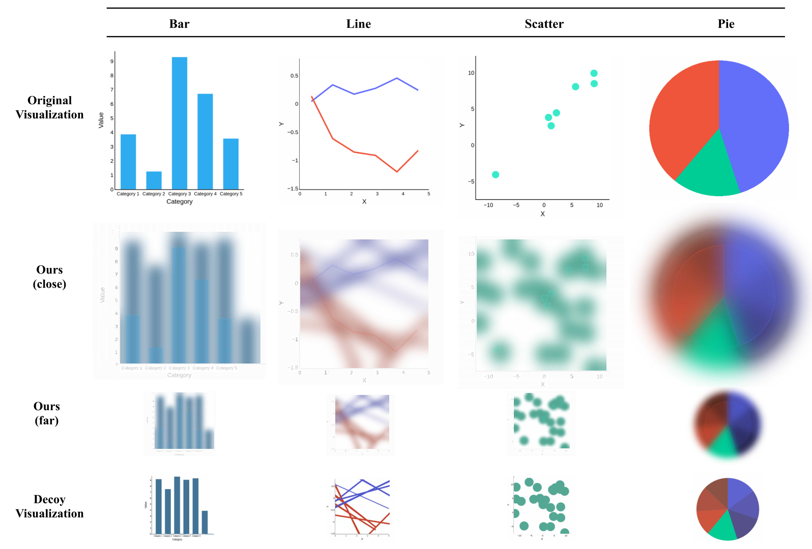

Bar Charts
Decoy bars with altered heights change apparent comparisons at a distance, while the original bars remain distinguishable up close.
CHI 2026 · Barcelona, Spain
*Both authors contributed equally · †Corresponding author
With the prevalence of mobile data visualizations, there have been growing concerns about their privacy risks, especially shoulder surfing attacks. Inspired by prior research on visual illusion, we propose BAIT, a novel approach to automatically generate privacy-preserving visualizations by stacking a decoy visualization over a given visualization. It allows visualization owners at proximity to clearly discern the original visualization and makes shoulder surfers at a distance be misled by the decoy visualization, by adjusting different visual channels of a decoy visualization (e.g., shape, position, tilt, size, color and spatial frequency). We explicitly model human perception effect at different viewing distances to optimize the decoy visualization design. Privacy-preserving examples and two in-depth user studies demonstrate the effectiveness of BAIT in both controlled lab study and real-world scenarios.
A shoulder surfer can infer sensitive trends, proportions, and clusters from a brief glance at a mobile visualization. BAIT overlays a plausible decoy visualization that shares the original chart’s visual form while encoding different information. The owner at close range can distinguish the original marks; a shoulder surfer farther away is led to perceive the decoy’s misleading patterns.
To create this separation, BAIT combines chart-specific changes to the decoy’s geometry with adjustments to color, contrast, and spatial frequency. A perception-driven optimization selects the configuration that balances readability for the owner with privacy against distant shoulder surfers.

Visual illusion and perceptual grouping. BAIT draws on visual perception research showing that perceived structure can diverge from the underlying stimulus. The Gestalt principle of similarity explains why marks with similar shapes and hues tend to be grouped together. By preserving these similarities while changing data-encoding channels, BAIT makes the decoy visually coherent and difficult for a distant observer to separate from the original.
Distance-dependent contrast sensitivity. The Contrast Sensitivity Function (CSF) characterizes how visibility depends on spatial frequency and luminance or chromatic contrast. As viewing distance increases, the same details occupy a smaller visual angle and become harder to resolve. BAIT blurs the decoy to retain its low-frequency structure and applies a masking scheme to increase the original visualization’s spatial frequency, allowing the owner to resolve the original marks up close while the decoy dominates farther away.
Perception-driven optimization. BAIT simulates close and far viewing through distance-dependent downsampling. It then searches over luminance, chroma, blur kernel size, and mask area, using the Visual Saliency-based Index (VSI) and Multi-Scale Structural Similarity (MS-SSIM) to favor similarity to the original at close range and to the decoy at a distance. The objective maximizes these perceptual differences across viewing distances.

BAIT uses chart-specific rules to alter data-encoding channels while preserving the chart type: it varies bar heights, adjusts line positions and slopes, displaces scatter points, and splits or merges pie sectors. Color and spatial-frequency adjustments then control how the original and decoy are perceived at different viewing distances.

Each recording shows a BAIT-protected visualization as the camera moves from close to far, revealing how perception shifts from the original marks to the decoy. Select a chart type below to play its demonstration, or use full screen to inspect the visual details.
Decoy bars with altered heights change apparent comparisons at a distance, while the original bars remain distinguishable up close.
Additional decoy lines and altered slopes present misleading trends to distant viewers; the owner can distinguish the original lines at close range.
Larger, displaced decoy points change the perceived distribution and conceal the original points from distant shoulder surfers.
Splitting and merging decoy sectors changes apparent proportions at a distance, while the original sector boundaries remain visible up close.
Across bar, line, scatter, and pie charts, BAIT preserves the original visualization’s fine-grained structure at close range while shifting distant perception toward the decoy. In the controlled study with 32 participants, mean recognition accuracy for the original visualization was 96% at 30 cm for owners and 4% at 90 cm for shoulder surfers, compared with 99% at both distances for unprocessed visualizations. A second study with 12 participants examined usability in real-world settings.

@inproceedings{cheng2026bait,
title = {BAIT: Visual-illusion-inspired Privacy Preservation
for Mobile Data Visualization},
author = {Cheng, Sizhe and Zhang, Songheng and Ma, Dong and Wang, Yong},
booktitle = {Proceedings of the 2026 CHI Conference on Human
Factors in Computing Systems (CHI '26)},
year = {2026},
address = {Barcelona, Spain},
publisher = {ACM},
doi = {10.1145/3772318.3791259}
}